contents | previous | next IT appears as if the fears, which had distressed Rosalie, had in some degree subsided when she thus proceeded with her narrative, or rather journal:—— "April 11th, 1783. "It is now above a fortnight since I have been here. Every day has appeared more melancholy than that which preceded it; for every day and every hour diminishes my hope that Montalbert is
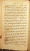 View image of 2 engaged in seeking me......Alas! could his vigilant love be deceived, or would not Signora Belcastro betray herself, had she been questioned?—Ah! fool that I am! I recollect that he could not question her; that he certainly could never know from her that Rosalie exists—Alozzi too is interested in deceiving him—perhaps we shall never meet again.....Montalbert! perhaps I am doomed to pass here, in this dreadful solitude, a long and wretched life. It is now four days since I prevailed on Cattina to let me wander over the deserted grounds that were once a garden; she finds I make no attempt to abuse this indulgence, and she does not now interdict the woods that surround the enclosure, or even the sea shore, though it is there only that I am likely to meet any of the few human beings who inhabit this depopulated region. I have been down to the sands, and on the wave-worn remains of a marble column, once, perhaps, the ornament of the port; I have been sitting to look at the sea. A very few
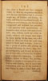 View image of 3 days since I should not have ventured hither, for then my imagination was filled with the fears that Cattina had so recently taught me, of Corsairs and Turks. By habit, and from having assured myself, by subsequent conversations, that Cattina had exaggerated and misdated her accounts, I had appeased those apprehensions, or learned to think of them with more steadiness: nor, indeed, could my walks increase, whatever real danger there might be, since, during the day time, any vessel would be discerned from the coast long before it could land its crew. I saw today a group of peasant girls picking up the small fish along the sand; they were gay and sportive, and seemed to have no fear of such visits as Cattina has described to me as frequently happening. I wished to have spoken to them; but, perhaps, I ought to consider it as a part of my convention with Cattina, not to enter into conversation with any of the persons I may chance to meet.—Alas! these poor
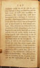 View image of 4 Calabrese could be of no use to me: they seemed to have no ideas beyond the little circle of their own necessities or pleasures; for though they must have known me to be a stranger, I excited no curiosity. Their happy indifference brought to my mind days when I was as thoughtless and as light-hearted as these simple peasants! That reflection was followed by the recollection of the circumstances that have happened to me with these last two years, and the chain of events, which, from one of the happiest, had reduced me to one of the most miserable of women. My waking dream lasted till the sun was set; the waves, as well as the whole horizon, assumed that rosy hue which mocks alike the pencil and the pen; I had heard that the exhalations from the marshes were unwholesome after a warm day, and I returned to my melancholy residence lest my child should suffer. Now, Montalbert, that he is sleeping by me, I relate on paper the sad employment of my solitary
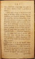 View image of 5day—alas! how many more may pass in the same manner—what a prospect is mine! "It is night.—I go to my window and look at the stars, which, in this clear atmosphere, are singularly brilliant. I seek the north star, because, Montalbert, I believe that you are in England—an idea that sometimes torments and sometimes sooths me; yet I encourage it even when I am most pained by it, for you have returned thither, perhaps, if not to seek your Rosalie, to weep with her mother for her supposed death.....That dear mother!—ah! how many tears have I already cost her—how many will she shed over my imaginary grave; while I, buried yet living, call on her name—on yours, Montalbert, in vain! "Perhaps it is fit we should suffer thus—perhaps it is the proper punishment for our disobedience.....Oh! if it be so, may I alone be pursued by the vengeance of Heaven, and may that little innocent creature be spared and restored to the
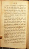 View image of 6protection of his father. It is possibly to me, to my rash folly, that Montalbert owes much of his present uneasiness: his mother may have driven him from her with reproaches, with anger—he may, on my account, be loaded with a parent's curse!——Dreadful thought! I dare not dwell upon it. "I cast my eyes round the high and gloomy room where I sit: all is silent and forlorn; cold and faint, my heart seems to sink within me, and I listen, with even a degree of eagerness, to hear the slow footsteps of Cattina, along the apartments, bringing me my evening meal. "My keeper, for what else can I call her, is gone; she seems every day to soften in her manners towards me, and especially since she finds my child is to be brought up in the religion of his father. Poor, prejudiced woman; but she has not a bad heart, and there is something respectable even in her prejudices. I complained to her, this evening, of the languor I felt for want of some amusement when my
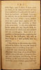 View image of 7child slept; and I asked if there were no books to be obtained here?—It was some time before I could make her understand my question. At length, however, she told me, that at the farther end of the castle, in a room which is never opened, there are a great many papers, and she believes books; she promises to show it me to-morrow. I may meet with some Italian poets, who may beguile those tedious minutes in which I am now tortured with my own thoughts. How well I remember, at Barlton Brooks, exploring the library of Mr. Lessington, and with as little success as I shall probably have tomorrow. "But talking to this woman has a little relieved my spirits; for even the sound of a human voice is consoling to my ear! "I will now endeavour to sleep.....Oh, come! thou image of my adored Montalbert—not as last night, in imaginary danger and contention, and risquing, for my defence, a life more precious than my own—but come to whisper peace and hope
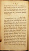 View image of 8to the dreams of your devoted Rosalie!—Ah! would I could be assured that you will ever read my journal; that your eye will ever mark where the tears have blistered the paper as I write this, perhaps, fruitless wish! "April 13th. "I look back at my journal of yesterday, and of the preceding day, and am half-tempted to give up this monotonous account of lingering anguish. I have learned nothing by my research after books, but the great extent of this my prison, and that it is Formiscusa, a castle situated seventeen miles from Squilace, and was the seat of feudal government, when the Norman Barons possessed this country. A rude map or chart, hung up against the walls of the room I explored yesterday, has told me this; but not without my taking some pains to get at the intelligence, by clearing away the mould with which it was covered, and, like many others, I have fought only my own pain;
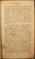 View image of 9for I now see that, from the situation of the place, there is but too much reason to believe it must be, at all times, exposed to hostile visits from Africa, or Turkey in Europe. I thought I had reasoned myself out of these fears, but they return in spite of me—so prone is the human mind, when under the pressure of actual evils, to aggravate them by anticipation of the future. "You would chide me, Montalbert, for any tendency to indulge this disposition.—Ah! wretch that I am, if you were here, should I murmur?—should I dream of evil?—Ah!—no—with you, this solitary and frowning pile would be to me a Paradise! I should then enjoy the beauty of a country, which, in some parts, is really lovely, but over which my eyes now wander often half-blinded by tears. "Since I have had permission to go out, however, and have walked about the garden, I am better; for there is a charm, in the contemplation of vegetable nature, that sooths my spirits beyond every thing
but music.....When poor Rosalie Lessington was ill at ease, at Barlton Brooks, it was a seat on the turf of the downs, under the shade of an old thorn or a tufted beech, that she retired to sigh at liberty, though she then hardly knew why she sighed. Now the really unhappy Rosalie Montalbert, with her infant in her arms, and, ah! with sensations how different in her heart, finds a resting place on the plinth of a broken statue, or on a piece of granite rock, shaded with myrtle or embowered in arbutus, and surveys, with hopeless eyes, the sun sinking into the sea, from whence he will arise tomorrow to bring to her another day of tears and despair! "Just as I had finished the last sentence, Cattina came to tell me, that a Turkish xebec, chased by a Maltese galley, was in sight; and that I might now be convinced how very near the Barbarians sometimes approached the shore. I trembled, and had hardly strength to follow her up to the western tower, which
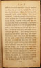 View image of 11 affords the most extensive view: I saw two vessels, one of which pursued the other, but they were too distant for me to distinguish with what nations they were manned. Soon afterwards, however, they were so near that I could distinguish the form of the Turkish vessel, and see the crescent she bore as an ensign; but fighting did not seem to be her purpose at that time; for, finding the Maltese gain upon her, set up more sail, and made every effort to get away. The enemy, however, pursued, and fired upon her; we heard the report, and soon after saw the flashes of the guns amid clouds of smoke; the Corsair returned the fire, but still made off, and, I suppose having some advantage as to lightness, soon got out of the reach of the firing. At length the xebec became like a doubtful spot in the horizon, and then entirely disappeared; while the Maltese vessel, to my great comfort, abandoned the chase, yet continued cruizing along the coast, as if to protect us against the invader, should he dare to return.
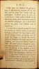 View image of 12"My eyes are affected by gazing so long at the dazzling expanse of sea, and they and my heart still flutter with apprehension. I dread going to bed, for I shall fancy I hear hostile sounds in the adjoining rooms, and threatening tones in an unknown language: yet I know these pirates are gone, and unlikely now to molest us. "I went down into the garden in hopes of calming my spirits before I attempted to sleep.—Already the heats have tarnished the lively verdure of spring, and the cicala has began to devour the leaves; while in England the trees are but just budding, and the earlier shrubs hardly in leaf. If I were a poet, I should be tempted, were my heart ever for a moment at ease, to add one to the number of those who have celebrated, or have attempted to celebrate, the nightingale; for here the note of that bird is infinitely more mellow and delicious than in England. I have been vainly trying to recollect some of the most beautiful addresses to this songstress
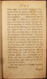 View image of 13of the night, but trouble and anxiety have driven from my memory the few images that, in my circumscribed reading, I had once collected......Montalbert! shall I ever again be restored to happiness and you?—If ever I am, shall I not feel myself so depressed, so undone, by this tedious course of suffering, as to have lost the few claims I had to your tenderness.—Ah! here is another source of pain opened—I become a self tormenter. But, conscious that it is weak, nay, perhaps wicked, I will try to check this continual inclination to repine—I will kneel by my sleeping infant, and recommend him and Montalbert to the protection of that merciful Being, who preserved me and my child among the crash of ruins, and the yawning gulphs that surrounded us in Sicily, and who can deliver us from this dreary prison, and restore us to the husband and the father." The little narrative of Rosalie was now interrupted.
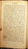 View image of 14 Wearied by the continual sameness of wandering about the fortress, where gloomy strength was not allied to safety, and where there was no alternative between the stagnation of cheerless solitude and the tremors of fear, (for whenever she conversed with Cattina these fears failed not to be renewed), Rosalie, on the day following that of which she has last given an account, took a walk hitherto untried, and went down to the village, if a small group of fishermen's huts could be called so.—These were built with pieces of marble, intermingled with clay, and among them lay scattered many remains of magnificent buildings, pieces of large statues, and broken pillars. The idea of the splendid works of man fallen to decay, and hastening to oblivion, yet having survived for ages the beings who toiled to raise them, has always something mournful in it to a reflecting mind; and Rosalie was imagining to herself how different the appearance of this port must have been se-
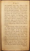 View image of 15ven hundred years ago, when it was crowded with vessels, and its streets displayed all that commerce then procured for the rich and luxurious. Now, strange reverse! a few half-naked children playing before the humble doors, where their sun-burnt mothers sat spinning coarse hemp, or a fisherman or two pushing off their barks with the evening tide, to fish during the night, on the success of which, their principal subsistence depended, were all the living beings visible in this obscure hamlet. A high mound, rising in the midst of the village, had been formed by the fallen ruins of a temple. It was now covered with grass and low shrubs, but through them a marble capital, or an half-buried column, here and there were visible. On one of these last Rosalie sat down to rest a few moments before she returned home, and was sometimes indulging the reflections inspired by the place, sometimes talking to her child in a low and sweet voice, when she was startled by the footsteps of
) View image of 16 View image of 16a person on the hollow ground near her; she looked suddenly up, and saw, not an Algerine pirate, but a gentleman, whom she immediately knew to be an Englishman. Her amazement prevented her either moving or speaking; while the stranger, taking off his hat, said—"You must forgive me, Madam, if I cannot repress my curiosity—I believe you are English?—I fear I may appear impertinent; but it is impossible for me to restrain the eager wish I have to know by what extraordinary circumstance I here find a person so unlike the inhabitants—so unlike the objects I came hither to seek?" However respectfully this address was made, there were places and occasions where Rosalie would have resented it as impertinent; but now, on the desert coast of Calabria, an Englishman seemed to her as a brother—and the accents of an English voice, as a voice from Heaven. She tried, however, in vain to answer distinctly the unexpected question thus
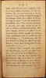 View image of 17made, and, faltering and trembling, said, in a voice hardly articulate, "I do not wonder, Sir, you are surprised at seeing me here! I am, indeed, an English stranger, and brought hither by a series of events too long to relate."—At that moment she recollected, that, if she was seen speaking to any one, her walks would be put an end to, and her confusion increased. She took courage, however, to add—"I am detained here wholly against my inclinations, and despair ever to revisit my native country......I thank you, Sir, for the interest you seem to take in my misfortunes; but I dread being seen to converse with - - - - - -" "Hasten then, I conjure you, (cried the Englishman), to tell me where you live, and how I can be of use to you....Good God! you are here against your inclinations!—But who dares to confine you?—I am a stranger to you, Madam, and a mere idle wanderer in this land; but, as a man of your country, you have
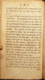 View image of 18a right to all my services—command, and be assured I will at least try to obey you." A ray of hope now darted into the mind of Rosalie. Prepossessed with an idea that Montalbert was in England, the offers of this gentleman seemed to be directed by the interposition of Heaven to convey her to him. The tumult of her spirits were too great to allow her to reflect on the hazard she might incur by putting herself into the power of a stranger; the hopes of being conveyed to England, and Montalbert, by his means, absorbed at that moment every other consideration: but the more delightful the prospect was, the more she dreaded its vanishing, and this she know would happen if Cattina discovered her talking to any one. Terrified, therefore, lest she should be observed, she said, in a hurried way—"I am so situated, that I dare not stay to explain who I am, or relate the causes that have made me a prisoner in the great
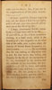 View image of 19castle you see above; but, if you are in the neighbourhood of this place to-morrow - - - - - - -" "If I am? (cried the stranger eagerly), only tell me where I shall see you again, and I will wait your own time—I will attend you at the risk of my life." "I hope, (interrupted Rosalie tremulously)—I hope there will be no risk.....If you will be, at five o'clock to-morrow evening, in a small wood, which is the boundary of a sort of garden on the other side of the castle, near a place where the remains of several statues surround a ruined fountain - - - - - - -; (she recollected that she was making an assignation with a man she had never seen before, and stopped, for she felt all the impropriety of it; yet, encouraged by her motives and the rectitude of her intentions, she proceeded)—I will be there, and explain to you who I am, and how - - - - you can oblige me, (she was going to say, but again checked herself, and only added)—but now it is impossible for me to stay."
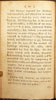 View image of 20The stranger repeated her directions with earnestness, and assured her he would be there.—" And this lovely child too! (said he, still following her as she turned to go to the castle), is this too of my country?"—"It is mine, (answered Rosalie mournfully); but, indeed, you must now leave me, or your obliging offers of service will be frustrated."—The gentleman bowed, and suffered her to go, following her with his eyes till she reached the buildings adjoining the castle, which concealed her from his sight. He then slowly retired, while Rosalie, breathless and trembling, sought her guard, and so over-acted her part, by complaining of her solitary walks, and affecting her former languor, that a more accurate observer than Cattina would have guessed that some unusual circumstance had befallen her. Cattina had, however, no suspicions, and Rosalie went to her room, and to her reflections on what had passed.
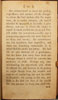 View image of 21 She endeavoured to recall the person, expressions, and manner of the stranger to whom she had spoken, that she might now, in a cooler moment, ask herself whether he appeared to be really a gentleman, and one in whom she ought to repose so much confidence as to put herself under this protection.——He was a young man, apparently not more than two or three and twenty; his countenance was less handsome than expressive, and there was something remarkable in it, which Rosalie could not define. He had the air and manners of a gentleman; but she knew that many have those advantages whom it would be extreme imprudence to trust. Perhaps too, notwithstanding the earnestness with which he offered her any services in his power, he might shrink from the trouble and expence of conducting her and her child to England; for young as she was, and little as she had yet seen of the world, she was not now to learn that those who
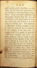 View image of 22 most warmly profess friendship, are often those who fly from the performance of any kindness at all inconvenient to themselves. These and other reflections half discouraged Rosalie from the plan she had formed, in the first moments of meeting, with a man who seemed to have the power of releasing her. The disposition of Montalbert forcibly recurred to her; he might be rendered for ever suspicious of her conduct, if she thus rashly entrusted herself to a person of whom she could know nothing, and whose character might be such as would entirely ruin hers, in the opinion of the world, when it should be known that she had been conducted by him to England.—Yet, on the other hand, in losing the only opportunity to escape that might ever offer, she condemned herself and her little boy to perpetual imprisonment, and became accessary to her own misery and that of Montalbert......Ah! who could tell that he would not, in the persuasion
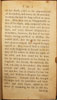 View image of 23 of her death, yield to the importunities of his mother, and marry the Roman lady to whom she had so long wished to unite him. This idea was as insupportable as that of this death, and, compared with its being realized, every other evil became light, and every hazard disappeared.—Sometimes, however, the fear of her husband's having perished at Messina obtruded itself; but the pains his mother had taken to conceal her argued strongly against it. But, even if such calamity had really happened, it seemed to be the duty of his widow to claim the rights of his child, and how could this be done but by having recourse to her friends in England: for friends, she believed, she had, not only in her mother, who would protect and assist, though she could not own her, but in Charles Vyvian her real, and William Lessington her adopted, brother. Towards these she thought she might look for protection and kindness; and these hopes, added to her dread of remaining for life in the me-
) View image of 24 View image of 24 lancholy and even dangerous solitude of Formiscusa, determined her, if the stranger on their meeting still appeared willing to assist her, to endeavour, by his means, to reach England.
|
){kind=link}
){kind=link}
){kind=link}
){kind=link}
){kind=link}
){kind=link}
){kind=link}
){kind=link}
){kind=link}
){kind=link}
){kind=link}
){kind=link}
){kind=link}
){kind=link}
){kind=link}
){kind=link}
){kind=link}
){kind=link}
){kind=link}
){kind=link}
){kind=link}